芯驿电子科技（上海）有限公司 基于XILINX ZYNQ7000开发平台的开发板（型号：AX7450B）2020款正式发布了正式发布了，为了让您对此开发平台可以快速了解，我们编写了此用户手册。
这款ZYNQ7000 FPGA开发平台使用XILINX的Zynq7000 SOC 芯片XC7Z100的解决方案，它采用ARM+FPGA SOC技术将双核ARM Cortex-A9 和FPGA 可编程逻辑集成在一颗芯片上。ZYNQ的PS端挂载了2片512MB的高速DDR3 SDRAM芯片, PL端挂载了4片512MB的高速DDR3 SDRAM芯片。另外PS端有1片8GB的eMMC存储芯片和2片256Mb的QSPI FLASH芯片。
外围电路方面我们为用户扩展了丰富的接口，比如1个PCIex8 接口、1路千兆以太网接口、1路USB2.0 OTG接口、1路HDMI输出接口、1路UART串口接口、1路SD卡接口、一个FMC HPC扩展接口、2路SMA接口等等。满足用户各种高速数据交换，数据存储，视频传输处理以及工业控制的要求，是一款”专业级“的ZYNQ开发平台。为高速数据传输和交换，数据处理的前期验证和后期应用提供了可能。相信这样的一款产品非常适合从事ZYNQ开发的学生、工程师等群体。
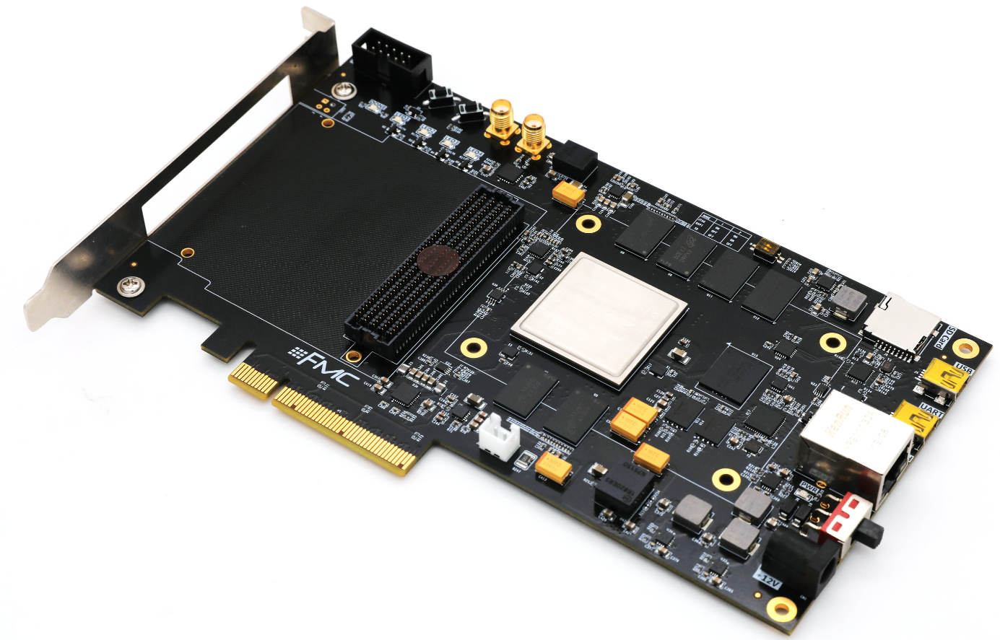开发板简介#
在这里，对这款AX7450B ZYNQ开发平台进行简单的功能介绍。
开发板主要由ZYNQ7100主芯片，6片DDR3，1片eMMC，2个QSPI FLASH和一些外设接口组成。ZYNQ7100采用Xilinx公司的Zynq7000系列的芯片，型号为XC7Z100-2FFG900。ZYNQ710芯片可分成处理器系统部分Processor System（PS）和可编程逻辑部分Programmable Logic（PL）。在ZYNQ7100芯片的PS端挂了2片DDR3，PL端挂了4片DDR3，每片DDR3容量高达512M字节，使得ARM系统和FPGA系统能独立处理和存储的数据的功能。PS端的8GB eMMC FLASH存储芯片和2片256Mb的QSPI FLASH用来静态存储ZYNQ的操作系统、文件系统及用户数据。
AX7450B开发板扩展了丰富的外围接口，其中包含1个PCIex8接口、1路千兆以太网接口、1路USB2.0 OTG接口、1路UART串口接口、1路SD卡接口、1个FMC HPC扩展接口，2路SMA接口，和一些按键LED。
下图为整个开发系统的结构示意图：
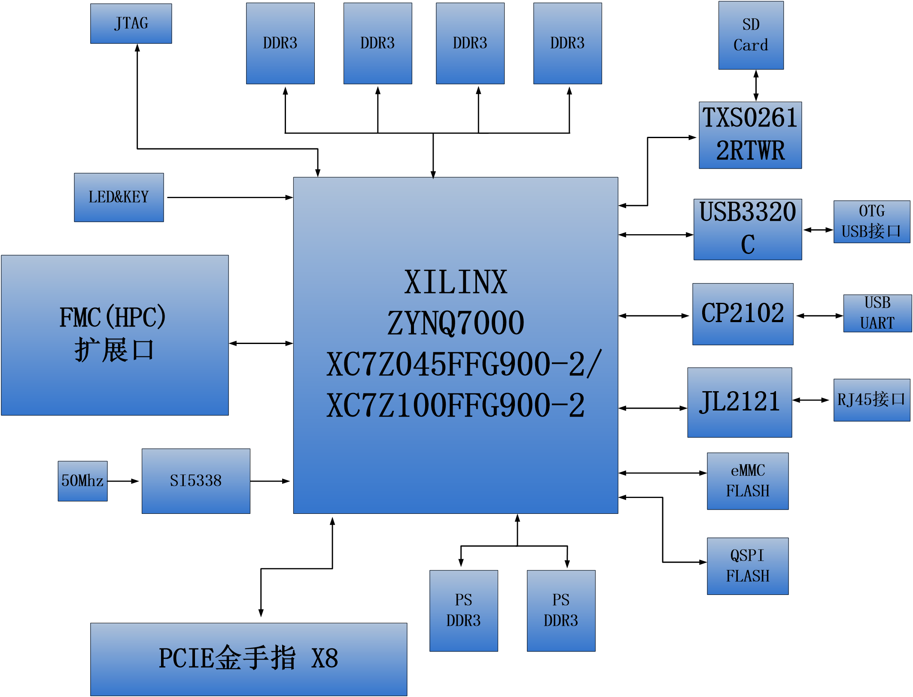通过这个示意图，我们可以看到，我们这个开发平台所能含有的接口和功能。
Xilinx ARM+FPGA芯片Zynq-7000 XC7Z100-2FFG900。
DDR3
带有6片大容量的512M字节（共3GB）高速DDR3 SDRAM。其中2片挂载在PS端，组成32位的数据宽度，可作为ZYNQ芯片数据的缓存，也可以作为操作系统运行的内存; 另外4片挂在PL端，组成64位数据宽度，可作为FPGA的数据存储，图像分析缓存，数据处理。
eMMC
PS端挂载一片8GB eMMC FLASH存储芯片，用户存储操作系统文件或者其他用户数据。
QSPI FLASH
2片256Mbit的QSPI FLASH存储芯片, 可用作ZYNQ芯片的Uboot文件，系统文件和用户数据的存储;
PCIe接口
支持PCI Express 2.0标准，提供标准的PCIe x8高速数据传输接口，单通道通信速率可高达5GBaud。
千兆以太网接口
1路10/100M/1000M以太网RJ45接口，用于和电脑或其它网络设备进行以太网数据交换。网络接口芯片采用景略半导体的JL2121工业级GPHY芯片，以太网连接到ZYNQ芯片的PS端。
USB2.0接口
用于和PC或USB设备的OTG通信, 连接器采用MINI USB接口。
USB Uart接口
1路Uart转USB接口，用于和电脑通信，方便用户调试。USB接口采用MINI USB接口。
Micro SD卡座
1路Micro SD卡座，用于存储操作系统镜像和文件系统。
FMC HPC扩展口
1个标准的FMC HPC的扩展口，可以外接XILINX或者我们黑金的各种FMC模块（HDMI输入输出模块，双目摄像头模块，高速AD模块等等）。FMC扩展口包含84对差分IO信号和8路高速GTX收发信号。
JTAG口
1个USB JTAG口，通过下载器对ZYNQ系统进行调试和下载
SMA口
2路SMA接口，用户可以连接外部触发信号或者时钟信号。
时钟
板载一个33.333Mhz的有源晶振，给PS系统提供稳定的时钟源，一个50MHz的有源晶振，为PL逻辑提供额外的时钟；另外板上有一个可编程的时钟芯片给GTX提供时钟源，为PCIE，光纤和DDR工作提供参考时钟。
LED灯
1个电源指示灯，1个DONE指示灯，4个用户调试LED灯, 1个前面板双色LED灯。
按键
2个按键，1个复位按键，1个PL用户按键。
ZYNQ芯片#
开发板使用的是Xilinx公司的Zynq7000系列的芯片，型号为XC7Z100-2FFG900。芯片的PS系统集成了两个ARM Cortex™-A9处理器，AMBA®互连，内部存储器，外部存储器接口和外设。这些外设主要包括USB总线接口，以太网接口，SD/SDIO接口，I2C总线接口，CAN总线接口，UART接口，GPIO等。PS可以独立运行并在上电或复位下启动。ZYNQ7000芯片的总体框图如图2-1所示

图2-1 ZYNQ7000芯片的总体框图
其中PS系统部分的主要参数如下：
基于ARM 双核CortexA9 的应用处理器，ARM-v7架构 高达800MHz
每个CPU 32KB 1级指令和数据缓存，512KB 2级缓存 2个CPU共享
片上boot ROM和256KB 片内RAM
外部存储接口，支持16/32 bit DDR2、DDR3接口
两个千兆网卡支持：发散-聚集DMA ，GMII，RGMII，SGMII接口
两个USB2.0 OTG接口，每个最多支持12节点
两个CAN2.0B总线接口
两个SD卡、SDIO、MMC兼容控制器
2个SPI，2个UARTs，2个I2C接口
54个多功能配置的IO，可以软件配置成普通IO或者外设控制接口
PS内和PS到PL的高带宽连接
其中PL逻辑部分的主要参数如下：
逻辑单元Logic Cells：444K；
查找表LUTs: 277400
触发器(flip-flops):554,800
乘法器18x25MACCs：2020;
Block RAM：26.5Mb；
16路高速GTX收发器，支持PCIE Gen2x8；
2个AD转换器,可以测量片上电压、温度感应和高达17外部差分输入通道，1MBPS
XC7Z100-2FFG900I芯片的速度等级为-2，工业级，封装为FGG900，引脚间距为1.0mm，ZYNQ7000系列的具体的芯片型号定义如下图2-2所示。

图2-2 ZYNQ型号命名规则定义
图2-3为开发板所用的XC7Z100芯片实物图。
。
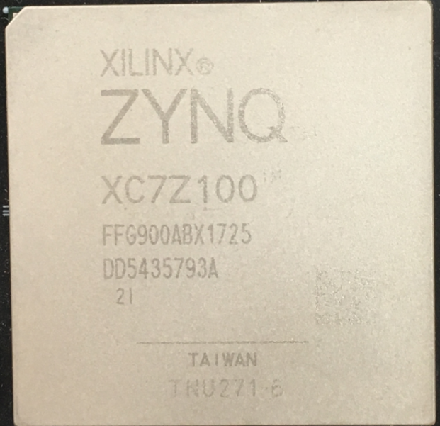图2-3 XC7Z100芯片实物
DDR3 DRAM#
AX7450B开发板上配有6片Micron(美光）的512MB的DDR3芯片,型号为MT41J256M16HA-125(兼容MT41K256M16HA-125)。其中PS挂载2片，组成32位的数据宽度，PL端挂载4片，组成64位的数据宽度。PS端的DDR3 SDRAM的最高运行速度可达533MHz(数据速率1066Mbps)，2片DDR3存储系统直接连接到了ZYNQ处理系统（PS）的BANK 502的存储器接口上。PL端的DDR3 SDRAM的最高运行速度可达800MHz(数据速率1600Mbps)，4片DDR3存储系统连接到了FPGA的BANK33, BANK34的接口上。DDR3 SDRAM的具体配置如下表3-1所示。
表3-1 DDR3 SDRAM配置
位号 |
芯片型号 |
容量 |
厂家 |
U5,U6,U8,U9 U11,U12 |
MT41J256M16HA-125 |
256M x 16bit |
Micron |
DDR3的硬件设计需要严格考虑信号完整性，我们在电路设计和PCB设计的时候已经充分考虑了匹配电阻/终端电阻,走线阻抗控制，走线等长控制， 保证DDR3的高速稳定的工作。
PS端的DDR3 DRAM的硬件连接方式如图3-1所示:
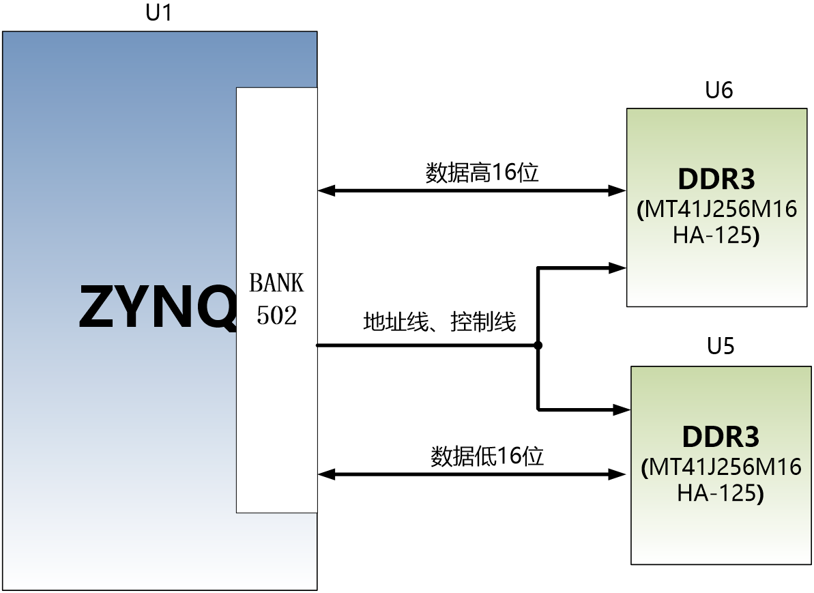图3-1 DDR3 DRAM原理图部分
PL端的DDR3 DRAM的硬件连接方式如图3-2所示:
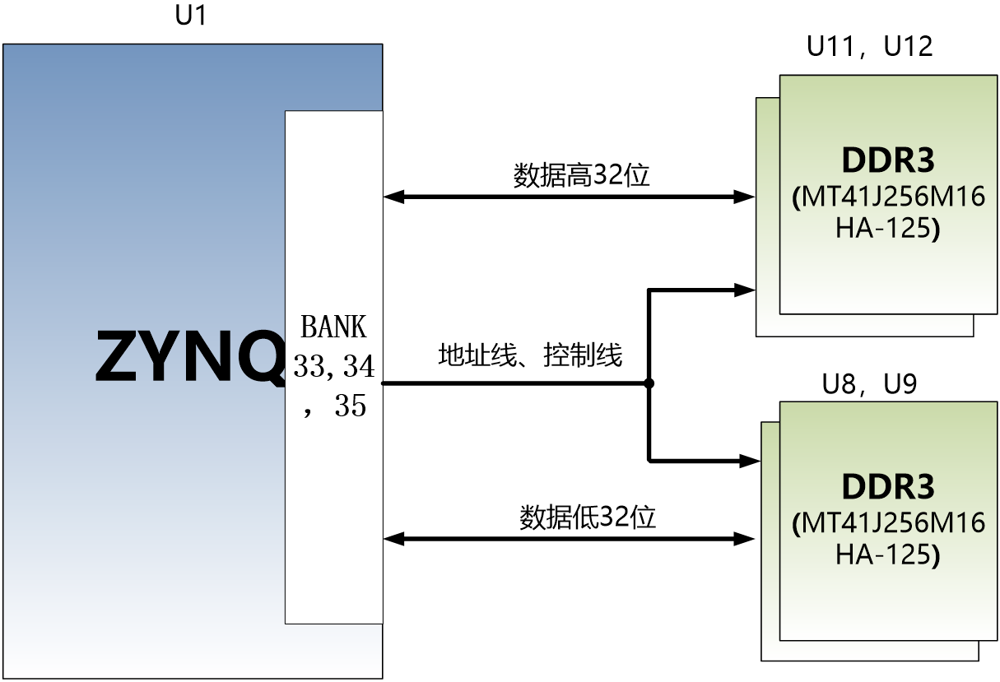PS端DDR3 DRAM引脚分配：
信号名称 |
ZYNQ引脚名 |
ZYNQ引脚号 |
PS_DDR3_DQS0_P |
PS_DDR_DQS_P0_502 |
C26 |
PS_DDR3_DQS0_N |
PS_DDR_DQS_N0_502 |
B26 |
PS_DDR3_DQS1_P |
PS_DDR_DQS_P1_502 |
C29 |
PS_DDR3_DQS1_N |
PS_DDR_DQS_N1_502 |
B29 |
PS_DDR3_DQS2_P |
PS_DDR_DQS_P2_502 |
G29 |
PS_DDR3_DQS2_N |
PS_DDR_DQS_N2_502 |
F29 |
PS_DDR3_DQS3_P |
PS_DDR_DQS_P3_502 |
L28 |
PS_DDR3_DQS4_N |
PS_DDR_DQS_N3_502 |
L29 |
PS_DDR3_D0 |
PS_DDR_DQ0_502 |
A25 |
PS_DDR3_D1 |
PS_DDR_DQ1_502 |
E25 |
PS_DDR3_D2 |
PS_DDR_DQ2_502 |
B27 |
PS_DDR3_D3 |
PS_DDR_DQ3_502 |
D25 |
PS_DDR3_D4 |
PS_DDR_DQ4_502 |
B25 |
PS_DDR3_D5 |
PS_DDR_DQ5_502 |
E26 |
PS_DDR3_D6 |
PS_DDR_DQ6_502 |
D26 |
PS_DDR3_D7 |
PS_DDR_DQ7_502 |
E27 |
PS_DDR3_D8 |
PS_DDR_DQ8_502 |
A29 |
PS_DDR3_D9 |
PS_DDR_DQ9_502 |
A27 |
PS_DDR3_D10 |
PS_DDR_DQ10_502 |
A30 |
PS_DDR3_D11 |
PS_DDR_DQ11_502 |
A28 |
PS_DDR3_D12 |
PS_DDR_DQ12_502 |
C28 |
PS_DDR3_D13 |
PS_DDR_DQ13_502 |
D30 |
PS_DDR3_D14 |
PS_DDR_DQ14_502 |
D28 |
PS_DDR3_D15 |
PS_DDR_DQ15_502 |
D29 |
PS_DDR3_D16 |
PS_DDR_DQ16_502 |
H27 |
PS_DDR3_D17 |
PS_DDR_DQ17_502 |
G27 |
PS_DDR3_D18 |
PS_DDR_DQ18_502 |
H28 |
PS_DDR3_D19 |
PS_DDR_DQ19_502 |
E28 |
PS_DDR3_D20 |
PS_DDR_DQ20_502 |
E30 |
PS_DDR3_D21 |
PS_DDR_DQ21_502 |
F28 |
PS_DDR3_D22 |
PS_DDR_DQ22_502 |
G30 |
PS_DDR3_D23 |
PS_DDR_DQ23_502 |
F30 |
PS_DDR3_D24 |
PS_DDR_DQ24_502 |
J29 |
PS_DDR3_D25 |
PS_DDR_DQ25_502 |
K27 |
PS_DDR3_D26 |
PS_DDR_DQ26_502 |
J30 |
PS_DDR3_D27 |
PS_DDR_DQ27_502 |
J28 |
PS_DDR3_D28 |
PS_DDR_DQ28_502 |
K30 |
PS_DDR3_D29 |
PS_DDR_DQ29_502 |
M29 |
PS_DDR3_D30 |
PS_DDR_DQ30_502 |
L30 |
PS_DDR3_D31 |
PS_DDR_DQ31_502 |
M30 |
PS_DDR3_DM0 |
PS_DDR_DM0_502 |
C27 |
PS_DDR3_DM1 |
PS_DDR_DM1_502 |
B30 |
PS_DDR3_DM2 |
PS_DDR_DM2_502 |
H29 |
PS_DDR3_DM3 |
PS_DDR_DM3_502 |
K28 |
PS_DDR3_A0 |
PS_DDR_A0_502 |
L25 |
PS_DDR3_A1 |
PS_DDR_A1_502 |
K26 |
PS_DDR3_A2 |
PS_DDR_A2_502 |
L27 |
PS_DDR3_A3 |
PS_DDR_A3_502 |
G25 |
PS_DDR3_A4 |
PS_DDR_A4_502 |
J26 |
PS_DDR3_A5 |
PS_DDR_A5_502 |
G24 |
PS_DDR3_A6 |
PS_DDR_A6_502 |
H26 |
PS_DDR3_A7 |
PS_DDR_A7_502 |
K22 |
PS_DDR3_A8 |
PS_DDR_A8_502 |
F27 |
PS_DDR3_A9 |
PS_DDR_A9_502 |
J23 |
PS_DDR3_A10 |
PS_DDR_A10_502 |
G26 |
PS_DDR3_A11 |
PS_DDR_A11_502 |
H24 |
PS_DDR3_A12 |
PS_DDR_A12_502 |
K23 |
PS_DDR3_A13 |
PS_DDR_A13_502 |
H23 |
PS_DDR3_A14 |
PS_DDR_A14_502 |
J24 |
PS_DDR3_BA0 |
PS_DDR_BA0_502 |
M27 |
PS_DDR3_BA1 |
PS_DDR_BA1_502 |
M26 |
PS_DDR3_BA2 |
PS_DDR_BA2_502 |
M25 |
PS_DDR3_S0 |
PS_DDR_CS_B_502 |
N22 |
PS_DDR3_RAS |
PS_DDR_RAS_B_502 |
N24 |
PS_DDR3_CAS |
PS_DDR_CAS_B_502 |
M24 |
PS_DDR3_WE |
PS_DDR_WE_B_502 |
N23 |
PS_DDR3_ODT |
PS_DDR_ODT_502 |
L23 |
PS_DDR3_RESET |
PS_DDR_DRST_B_502 |
F25 |
PS_DDR3_CLK0_P |
PS_DDR_CKP_502 |
K25 |
PS_DDR3_CLK0_N |
PS_DDR_CKN_502 |
J25 |
PS_DDR3_CKE |
PS_DDR_CKE_502 |
M22 |
PL端DDR3 DRAM引脚分配：
信号名称 |
ZYNQ引脚名 |
ZYNQ引脚号 |
PL_DDR3_DM0 |
IO_L4P_T0_35 |
J14 |
PL_DDR3_DQS0_N |
IO_L3N_T0_DQS_AD1N_35 |
K13 |
PL_DDR3_DQS0_P |
IO_L3P_T0_DQS_AD1P_35 |
L13 |
PL_DDR3_D0 |
IO_L5N_T0_AD9N_35 |
J15 |
PL_DDR3_D1 |
IO_L2N_T0_AD8N_35 |
H13 |
PL_DDR3_D2 |
IO_L1P_T0_AD0P_35 |
L15 |
PL_DDR3_D3 |
IO_L2P_T0_AD8P_35 |
J13 |
PL_DDR3_D4 |
IO_L5P_T0_AD9P_35 |
K15 |
PL_DDR3_D5 |
IO_L1N_T0_AD0N_35 |
L14 |
PL_DDR3_D6 |
IO_L6P_T0_35 |
J16 |
PL_DDR3_D7 |
IO_L4N_T0_35 |
H14 |
PL_DDR3_DM1 |
IO_L12N_T1_MRCC_35 |
F14 |
PL_DDR3_DQS1_N |
IO_L9N_T1_DQS_AD3N_35 |
F12 |
PL_DDR3_DQS1_P |
IO_L9P_T1_DQS_AD3P_35 |
G12 |
PL_DDR3_D8 |
IO_L8N_T1_AD10N_35 |
G14 |
PL_DDR3_D9 |
IO_L10N_T1_AD11N_35 |
E12 |
PL_DDR3_D10 |
IO_L7N_T1_AD2N_35 |
G16 |
PL_DDR3_D11 |
IO_L11N_T1_SRCC_35 |
D13 |
PL_DDR3_D12 |
IO_L10P_T1_AD11P_35 |
F13 |
PL_DDR3_D13 |
IO_L11P_T1_SRCC_35 |
E13 |
PL_DDR3_D14 |
IO_L8P_T1_AD10P_35 |
G15 |
PL_DDR3_D15 |
IO_L12P_T1_MRCC_35 |
F15 |
PL_DDR3_DM2 |
IO_L16N_T2_35 |
C16 |
PL_DDR3_DQS2_N |
IO_L15N_T2_DQS_AD12N_35 |
E17 |
PL_DDR3_DQS2_P |
IO_L15P_T2_DQS_AD12P_35 |
F17 |
PL_DDR3_D16 |
IO_L18N_T2_AD13N_35 |
A17 |
PL_DDR3_D17 |
IO_L16P_T2_35 |
D16 |
PL_DDR3_D18 |
IO_L17P_T2_AD5P_35 |
C17 |
PL_DDR3_D19 |
IO_L14P_T2_AD4P_SRCC_35 |
D15 |
PL_DDR3_D20 |
IO_L17N_T2_AD5N_35 |
B16 |
PL_DDR3_D21 |
IO_L13N_T2_MRCC_35 |
E15 |
PL_DDR3_D22 |
IO_L18P_T2_AD13P_35 |
B17 |
PL_DDR3_D23 |
IO_L14N_T2_AD4N_SRCC_35 |
D14 |
PL_DDR3_DM3 |
IO_L20P_T3_AD6P_35 |
C12 |
PL_DDR3_DQS3_N |
IO_L21N_T3_DQS_AD14N_35 |
A15 |
PL_DDR3_DQS3_P |
IO_L21P_T3_DQS_AD14P_35 |
B15 |
PL_DDR3_D24 |
IO_L22P_T3_AD7P_35 |
C11 |
PL_DDR3_D25 |
IO_L23P_T3_35 |
B14 |
PL_DDR3_D26 |
IO_L22N_T3_AD7N_35 |
B11 |
PL_DDR3_D27 |
IO_L24N_T3_AD15N_35 |
A12 |
PL_DDR3_D28 |
IO_L24P_T3_AD15P_35 |
A13 |
PL_DDR3_D29 |
IO_L19P_T3_35 |
C14 |
PL_DDR3_D30 |
IO_L20N_T3_AD6N_35 |
B12 |
PL_DDR3_D31 |
IO_L23N_T3_35 |
A14 |
PL_DDR3_DM4 |
IO_L2P_T0_33 |
L1 |
PL_DDR3_DQS4_N |
IO_L3N_T0_DQS_33 |
K2 |
PL_DDR3_DQS4_P |
IO_L3P_T0_DQS_33 |
K3 |
PL_DDR3_D32 |
IO_L1N_T0_33 |
J3 |
PL_DDR3_D33 |
IO_L4N_T0_33 |
L2 |
PL_DDR3_D34 |
IO_L1P_T0_33 |
J4 |
PL_DDR3_D35 |
IO_L4P_T0_33 |
L3 |
PL_DDR3_D36 |
IO_L2N_T0_33 |
K1 |
PL_DDR3_D37 |
IO_L6P_T0_33 |
K6 |
PL_DDR3_D38 |
IO_L5N_T0_33 |
J5 |
PL_DDR3_D39 |
IO_L5P_T0_33 |
K5 |
PL_DDR3_DM5 |
IO_L12P_T1_MRCC_33 |
G5 |
PL_DDR3_DQS5_N |
IO_L9N_T1_DQS_33 |
H1 |
PL_DDR3_DQS5_P |
IO_L9P_T1_DQS_33 |
J1 |
PL_DDR3_D40 |
IO_L11P_T1_SRCC_33 |
H4 |
PL_DDR3_D41 |
IO_L10N_T1_33 |
G1 |
PL_DDR3_D42 |
IO_L8P_T1_33 |
H6 |
PL_DDR3_D43 |
IO_L7N_T1_33 |
F2 |
PL_DDR3_D44 |
IO_L10P_T1_33 |
H2 |
PL_DDR3_D45 |
IO_L12N_T1_MRCC_33 |
G4 |
PL_DDR3_D46 |
IO_L8N_T1_33 |
G6 |
PL_DDR3_D47 |
IO_L11N_T1_SRCC_33 |
H3 |
PL_DDR3_DM6 |
IO_L14N_T2_SRCC_33 |
F3 |
PL_DDR3_DQS6_N |
IO_L15N_T2_DQS_33 |
D5 |
PL_DDR3_DQS6_P |
IO_L15P_T2_DQS_33 |
E6 |
PL_DDR3_D48 |
IO_L18P_T2_33 |
E1 |
PL_DDR3_D49 |
IO_L17P_T2_33 |
E3 |
PL_DDR3_D50 |
IO_L16N_T2_33 |
D3 |
PL_DDR3_D51 |
IO_L14P_T2_SRCC_33 |
F4 |
PL_DDR3_D52 |
IO_L18N_T2_33 |
D1 |
PL_DDR3_D53 |
IO_L13N_T2_MRCC_33 |
E5 |
PL_DDR3_D54 |
IO_L16P_T2_33 |
D4 |
PL_DDR3_D55 |
IO_L17N_T2_33 |
E2 |
PL_DDR3_DM7 |
IO_L23N_T3_33 |
B1 |
PL_DDR3_DQS7_N |
IO_L21N_T3_DQS_33 |
A4 |
PL_DDR3_DQS7_P |
IO_L21P_T3_DQS_33 |
A5 |
PL_DDR3_D56 |
IO_L22P_T3_33 |
C2 |
PL_DDR3_D57 |
IO_L24N_T3_33 |
A2 |
PL_DDR3_D58 |
IO_L20N_T3_33 |
B4 |
PL_DDR3_D59 |
IO_L20P_T3_33 |
B5 |
PL_DDR3_D60 |
IO_L22N_T3_33 |
C1 |
PL_DDR3_D61 |
IO_L24P_T3_33 |
A3 |
PL_DDR3_D62 |
IO_L19P_T3_33 |
C4 |
PL_DDR3_D63 |
IO_L23P_T3_33 |
B2 |
PL_DDR3_A14 |
IO_L22N_T3_34 |
K10 |
PL_DDR3_A13 |
IO_L7P_T1_34 |
J11 |
PL_DDR3_A12 |
IO_L13P_T2_MRCC_34 |
H9 |
PL_DDR3_A11 |
IO_L20N_T3_34 |
J9 |
PL_DDR3_A10 |
IO_L18N_T2_34 |
G7 |
PL_DDR3_A9 |
IO_L9P_T1_DQS_34 |
H12 |
PL_DDR3_A8 |
IO_L23P_T3_34 |
L10 |
PL_DDR3_A7 |
IO_L10P_T1_34 |
E10 |
PL_DDR3_A6 |
IO_L19P_T3_34 |
L7 |
PL_DDR3_A5 |
IO_L8N_T1_34 |
D11 |
PL_DDR3_A4 |
IO_L15N_T2_DQS_34 |
H8 |
PL_DDR3_A3 |
IO_L10N_T1_34 |
D10 |
PL_DDR3_A2 |
IO_L7N_T1_34 |
H11 |
PL_DDR3_A1 |
IO_L21P_T3_DQS_34 |
L8 |
PL_DDR3_A0 |
IO_L18P_T2_34 |
H7 |
PL_DDR3_BA2 |
IO_L9N_T1_DQS_34 |
G11 |
PL_DDR3_BA1 |
IO_L21N_T3_DQS_34 |
K8 |
PL_DDR3_BA0 |
IO_L22P_T3_34 |
K11 |
PL_DDR3_CLK0_P |
IO_L12P_T1_MRCC_34 |
D9 |
PL_DDR3_CLK0_N |
IO_L12N_T1_MRCC_34 |
D8 |
PL_DDR3_RAS |
IO_L13N_T2_MRCC_34 |
G9 |
PL_DDR3_S0 |
IO_L16P_T2_34 |
F8 |
PL_DDR3_WE |
IO_L16N_T2_34 |
F7 |
PL_DDR3_CAS |
IO_L17P_T2_34 |
E7 |
PL_DDR3_CKE |
IO_L17N_T2_34 |
D6 |
PL_DDR3_ODT |
IO_L20P_T3_34 |
J10 |
PL_DDR3_RESET |
IO_L8P_T1_34 |
E11 |
QSPI Flash#
开发板配有2片256MBit大小的Quad-SPI FLASH芯片，型号为W25Q256FVEI，它使用3.3V CMOS电压标准。由于QSPI FLASH的非易失特性，在使用中， 它可以作为系统的启动设备来存储系统的启动镜像。这些镜像主要包括FPGA的bit文件、ARM的应用程序代码以及其它的用户数据文件。QSPI FLASH的具体型号和相关参数见表4-1。
位号 |
芯片类型 |
容量 |
厂家 |
U13，U14 |
W25Q256FVEI |
32M Byte |
Winbond |
表4-1 QSPI Flash的型号和参数
QSPI FLASH连接到ZYNQ芯片的PS部分BANK500的GPIO口上，在系统设计中需要配置这些PS端的GPIO口功能为QSPI FLASH接口。为图4-1为QSPI Flash在原理图中的部分。
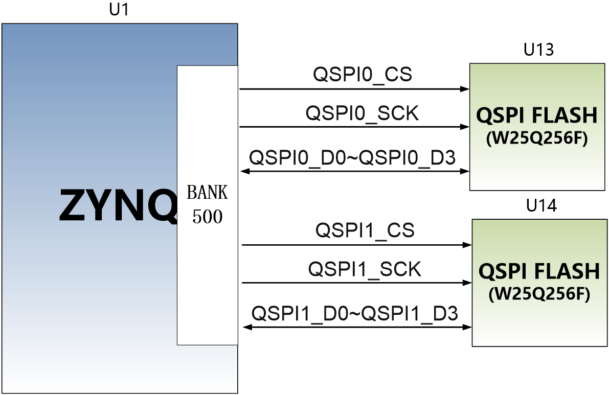图4-1 QSPI Flash连接示意图
配置芯片引脚分配：
信号名称 |
ZYNQ引脚名 |
ZYNQ引脚号 |
QSPI0_SCK |
PS_MIO6_500 |
D24 |
QSPI0_CS |
PS_MIO1_500 |
D23 |
QSPI0_D0 |
PS_MIO2_500 |
F23 |
QSPI0_D1 |
PS_MIO3_500 |
C23 |
QSPI0_D2 |
PS_MIO4_500 |
E23 |
QSPI0_D3 |
PS_MIO5_500 |
C24 |
QSPI1_SCK |
PS_MIO9_500 |
A24 |
QSPI1_CS |
PS_MIO0_500 |
F24 |
QSPI1_D0 |
PS_MIO10_500 |
E22 |
QSPI1_D1 |
PS_MIO11_500 |
A23 |
QSPI1_D2 |
PS_MIO12_500 |
E21 |
QSPI1_D3 |
PS_MIO13_500 |
F22 |
eMMC Flash#
开发板配有一片大容量的8GB大小的eMMC FLASH芯片，型号为THGBMFG6C1LBAIL，它支持JEDEC e-MMC V5.0标准的HS-MMC接口，电平支持1.8V或者3.3V。eMMC FLASH和ZYNQ连接的数据宽度为4bit。由于eMMC FLASH的大容量和非易失特性，在ZYNQ系统使用中，它可以作为系统大容量的存储设备，比如存储ARM的应用程序、系统文件以及其它的用户数据文件。eMMC FLASH的具体型号和相关参数见表5-1。
位号 |
芯片类型 |
容量 |
厂家 |
U11 |
THGBMFG6C1LBAIL |
8G Byte |
TOSHIBA |
表5-1 eMMC Flash的型号和参数
eMMC FLASH连接到ZYNQ芯片的PS部分BANK501的GPIO口上，在系统设计中需要配置这些PS端的GPIO口功能为SD接口。为图5-1为eMMC Flash在原理图中的部分。
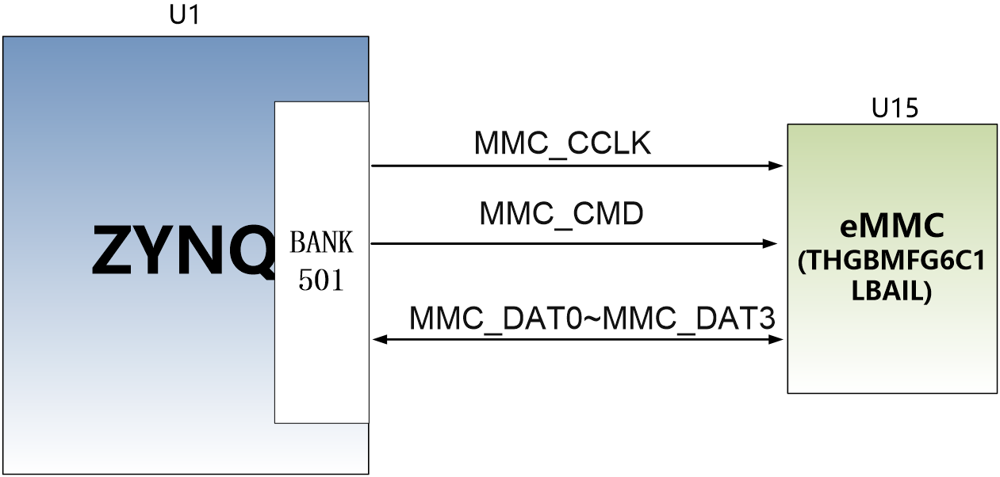图5-1 eMMC Flash连接示意图
配置芯片引脚分配：
信号名称 |
ZYNQ引脚名 |
ZYNQ引脚号 |
MMC_CCLK |
PS_MIO48_501 |
C19 |
MMC_CMD |
PS_MIO47_501 |
A18 |
MMC_D0 |
PS_MIO46_501 |
F20 |
MMC_D1 |
PS_MIO49_501 |
D18 |
MMC_D2 |
PS_MIO50_501 |
A19 |
MMC_D3 |
PS_MIO51_501 |
F19 |
时钟配置#
AX7450B开发板上分别为PS系统和PL逻辑部分提供了单端和差分有源时钟，使PS系统和PL逻辑可以单独工作。另外板为高速收发器GTX提供差分时钟源。
PS系统时钟源
ZYNQ芯片通过开发板上的X4晶振为PS部分提供33.333MHz的时钟输入。时钟的输入连接到ZYNQ芯片的BANK500的PS_CLK_500的管脚上。其原理图如图6-1所示：
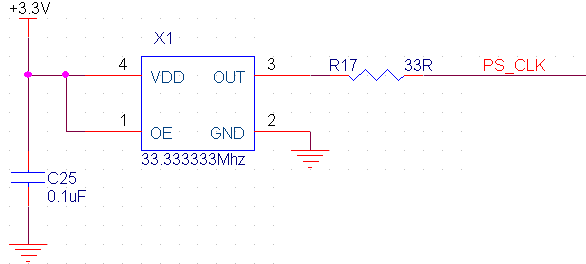图6-1 PS部分的有源晶振
时钟引脚分配：
信号名称 |
ZYNQ引脚 |
PS_CLK |
A22 |
PL系统时钟源
板上提供了一个单端50MHz的PL系统时钟源，1.8V供电。晶振输出连接到FPGA BANK9的局部时钟(SRCC)，这个时钟可以用来驱动FPGA内的用户逻辑电路。该时钟源的原理图如图6-3所示
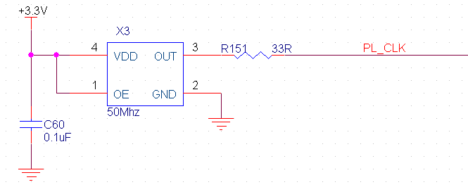PL时钟引脚分配：
信号名称 |
ZYNQ引脚 |
PL_CLK |
AB19 |
DDR参考时钟
一路200Mhz的差分晶振提供给BANK34，作为PL的DDR控制器的参考时钟；
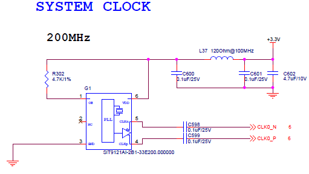图 6-5 200Mhz时钟参考源
PL时钟引脚分配：
信号名称 |
ZYNQ引脚 |
CLK0_P |
F9 |
CLK0_N |
E9 |
收发器参考时钟
一路156.25Mhz的差分晶振提供给BANK110，作为GTX收发器的SPF的参考时钟。
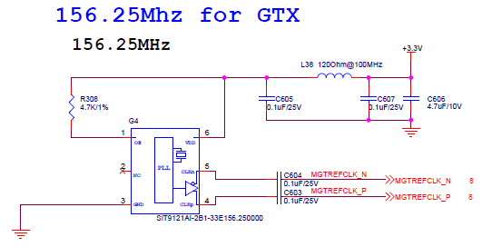收发器参考时钟引脚分配：
信号名称 |
ZYNQ引脚 |
MGTREFCLK_P |
AC8 |
MGTREFCLK_N |
AC7 |
USB转串口#
开发板上配备了一个Uart转USB接口，用于核心板单独供电和调试。转换芯片采用Silicon Labs CP2102GM的USB-UAR芯片, USB接口采用MINI USB接口，可以用一根USB线将它连接到上PC的USB口进行核心板的单独供电和串口数据通信 。
USB Uart电路设计的示意图如下图所示:
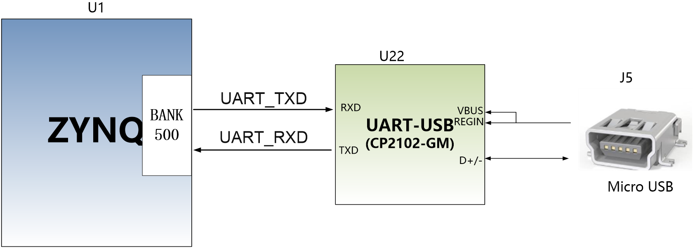7-1 USB转串口示意图
USB转串口的ZYNQ引脚分配：
信号名称 |
ZY NQ引脚名 |
ZY NQ引脚号 |
备注 |
UART_RXD |
PS_MIO14_500 |
B22 |
Uart数据输入 |
UART_TXD |
PS_MIO15_500 |
C22 |
Uart数据输出 |
千兆以太网接口#
AX7450B开发板上有1路千兆以太网接口，以太网接口是连接的PS系统端BANK501的MIO接口上。以太网芯片采用景略半导体的工业级以太网GPHY芯片（JL2121-N040I）为用户提供网络通信服务。JL2121芯片支持10/100/1000 Mbps网络传输速率，通过RGMII接口跟Zynq7000系统的MAC层进行数据通信。JL2121支持ＭDI/MDX自适应，各种速度自适应，Master/Slave自适应，支持MDIO总线进行PHY的寄存器管理。
JL2121上电会检测一些特定的IO的电平状态，从而确定自己的工作模式。表8-1 描述了GPHY芯片上电之后的默认设定信息。
配置Pin脚 |
说明 |
配置值 |
RXD3_ADR0 RXC_ADR1 RXCTL_ADR2 |
MDIO/MDC 模式的PHY地址 |
PHY Address 为 001 |
RXD1_TXDLY |
TX时钟2ns延时 |
延时 |
RXD0_RXDLY |
RX时钟2ns延时 |
延时 |
表8-1PHY芯片默认配置值
当网络连接到千兆以太网时，ZYNQ和PHY芯片JL2121的数据传输时通过RGMII总线通信，传输时钟为125Mhz，数据在时钟的上升沿和下降样采样。
当网络连接到百兆以太网时，ZYNQ和PHY芯片JL2121的数据传输时通过MII总线通信，传输时钟为25Mhz。数据在时钟的上升沿和下降样采样。
图8-1为ZYNQ PS端以太网PHY芯片连接示意图:
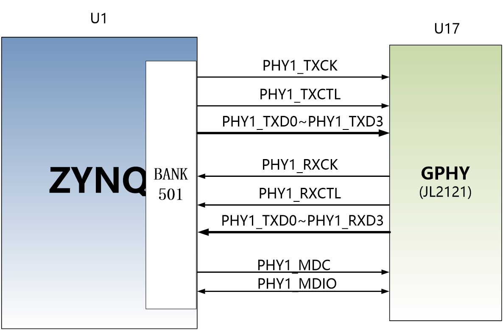 图8-1 ZYNQ PS系统与GPHY连接示意图
PS端千兆以太网引脚分配如下：
信号名称 |
ZYNQ引脚名 |
ZYNQ引脚号 |
备注 |
PHY1_TXCK |
PS_MIO16_501 |
L19 |
RGMII 发送时钟 |
PHY1_TXD0 |
PS_MIO17_501 |
K21 |
发送数据bit０ |
PHY1_TXD1 |
PS_MIO18_501 |
K20 |
发送数据bit1 |
PHY1_TXD2 |
PS_MIO19_501 |
J20 |
发送数据bit2 |
PHY1_TXD3 |
PS_MIO20_501 |
M20 |
发送数据bit3 |
PHY1_TXCTL |
PS_MIO21_501 |
J19 |
发送使能信号 |
PHY1_RXCK |
PS_MIO22_501 |
L20 |
RGMII接收时钟 |
PHY1_RXD0 |
PS_MIO23_501 |
J21 |
接收数据Bit0 |
PHY1_RXD1 |
PS_MIO24_501 |
M19 |
接收数据Bit1 |
PHY1_RXD2 |
PS_MIO25_501 |
G19 |
接收数据Bit2 |
PHY1_RXD3 |
PS_MIO26_501 |
M17 |
接收数据Bit3 |
PHY1_RXCTL |
PS_MIO27_501 |
G20 |
接 收数据有效信号 |
PHY1_MDC |
PS_MIO52_501 |
D19 |
MDIO管理时钟 |
PHY1_MDIO |
PS_MIO53_501 |
C18 |
MDIO管理数据 |
USB2.0 OTG接口#
AX7450B开发板上有1个USB2.0 OTG接口，USB2.0收发器采用的是一个1.8V的，高速的支持ULPI标准接口的USB3320C-EZK芯片，实现高速的USB2.0 Host模式的数据通信。
USB3320C的USB的数据和控制信号连接到ZYNQ芯片PS端的BANK501的IO口上，USB接口差分信号(DP/DM)连接到USB2514芯片扩展出4个USB接口。1个24MHz的晶振为分别为USB3320C芯片提供时钟，USB接口为MINI USB口。
ZYNQ处理器和USB3320C-EZK芯片USB口连接的示意图如9-1所示：
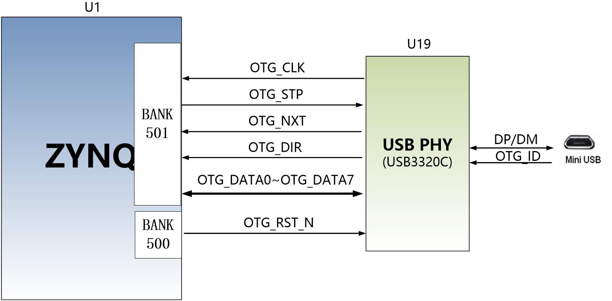图9-1 Zynq7000和USB芯片间连接示意图
USB2.0引脚分配：
信号名称 |
ZY NQ引脚名 |
ZY NQ引脚号 |
备注 |
OTG_DATA4 |
PS_MIO28_501 |
L17 |
USB数据Bit4 |
OTG_DIR |
PS_MIO29_501 |
H22 |
USB数据方向信号 |
OTG_STP |
PS_MIO30_501 |
L18 |
USB停止信号 |
OTG_NXT |
PS_MIO31_501 |
H21 |
USB下一数据信号 |
OTG_DATA0 |
PS_MIO32_501 |
K17 |
USB数据Bit0 |
OTG_DATA1 |
PS_MIO33_501 |
G22 |
USB数据Bit1 |
OTG_DATA2 |
PS_MIO34_501 |
K18 |
USB数据Bit2 |
OTG_DATA3 |
PS_MIO35_501 |
G21 |
USB数据Bit3 |
OTG_CLK |
PS_MIO36_501 |
H17 |
USB时钟信号 |
OTG_DATA5 |
PS_MIO37_501 |
B21 |
USB数据Bit5 |
OTG_DATA6 |
PS_MIO38_501 |
A20 |
USB数据Bit6 |
OTG_DATA7 |
PS_MIO39_501 |
F18 |
USB数据Bit7 |
OTG_RST_N |
PS_MIO7_500 |
B24 |
USB复位信号 |
PCIe插槽#
AX7450B开发板上有一个PCIe x8的接口， 8对收发器连接到PCIEx8的金手指上，能实现PCIEex8,PCIEex4, PCIex2, PCIex1的数据通信。
PCIe接口的收发信号直接跟ZYNQ BANK111, BANK112的GTX收发器相连接，8路TX信号和RX信号都是以差分信号方式连接到ZYNQ的收发器上，单通道通信速率可高达5G bit带宽。
开发板的PCIe接口的设计示意图如下图10-1所示,其中TX发送信号用AC耦合模式连接。
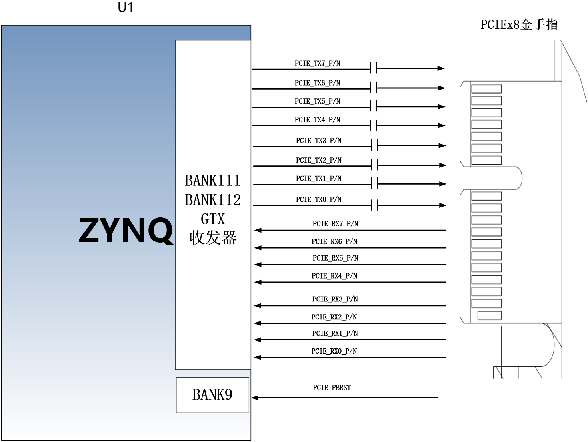图10-1 PCIe设计示意图
PCIe x8接口FPGA引脚分配如下：
信号名称 |
ZYNQ引脚名 |
ZYN Q引脚号 |
备注 |
PCIE_RX0_P |
BANK112_RX3_P |
P6 |
PCIE通道0数据接收正 |
PCIE_RX0_N |
BANK112_RX3_N |
P5 |
PCIE通道0数据接收负 |
PCIE_RX1_P |
BANK112_RX2_P |
T6 |
PCIE通道1数据接收正 |
PCIE_RX1_N |
BANK112_RX2_N |
T5 |
PCIE通道1数据接收负 |
PCIE_RX2_P |
BANK112_RX1_P |
U4 |
PCIE通道2数据接收正 |
PCIE_RX2_N |
BANK112_RX1_N |
U3 |
PCIE通道2数据接收负 |
PCIE_RX3_P |
BANK112_RX0_P |
V6 |
PCIE通道3数据接收正 |
PCIE_RX3_N |
BANK112_RX0_N |
V5 |
PCIE通道3数据接收负 |
PCIE_RX4_P |
BANK111_RX3_P |
AA4 |
PCIE通道4数据接收正 |
PCIE_RX4_N |
BANK111_RX3_N |
AA3 |
PCIE通道4数据接收负 |
PCIE_RX5_P |
BANK111_RX2_P |
Y6 |
PCIE通道5数据接收正 |
PCIE_RX5_N |
BANK111_RX2_N |
Y5 |
PCIE通道5数据接收负 |
PCIE_RX6_P |
BANK111_RX1_P |
AB6 |
PCIE通道6数据接收正 |
PCIE_RX6_N |
BANK111_RX1_N |
AB5 |
PCIE通道6数据接收负 |
PCIE_RX7_P |
BANK111_RX0_P |
AC4 |
PCIE通道7数据接收正 |
PCIE_RX7_N |
BANK111_RX0_N |
AC3 |
PCIE通道7数据接收负 |
PCIE_TX0_P |
BANK112_TX3_P |
N4 |
PCIE通道0数据发送正 |
PCIE_TX0_N |
BANK112_TX3_N |
N3 |
PCIE通道0数据发送负 |
PCIE_TX1_P |
BANK112_TX2_P |
P2 |
PCIE通道1数据发送正 |
PCIE_TX1_N |
BANK112_TX2_N |
P1 |
PCIE通道1数据发送负 |
PCIE_TX2_P |
BANK112_TX1_P |
R4 |
PCIE通道2数据发送正 |
PCIE_TX2_N |
BANK112_TX1_N |
R3 |
PCIE通道2数据发送负 |
PCIE_TX3_P |
BANK112_TX0_P |
T2 |
PCIE通道3数据发送正 |
PCIE_TX3_N |
BANK112_TX0_N |
T1 |
PCIE通道3数据发送负 |
PCIE_TX4_P |
BANK111_TX3_P |
V2 |
PCIE通道4数据发送正 |
PCIE_TX4_N |
BANK111_TX3_N |
V1 |
PCIE通道4数据发送负 |
PCIE_TX5_P |
BANK111_TX2_P |
W4 |
PCIE通道5数据发送正 |
PCIE_TX5_N |
BANK111_TX2_N |
W3 |
PCIE通道5数据发送负 |
PCIE_TX6_P |
BANK111_TX1_P |
Y2 |
PCIE通道6数据发送正 |
PCIE_TX6_N |
BANK111_TX1_N |
Y1 |
PCIE通道6数据发送负 |
PCIE_TX7_P |
BANK111_TX0_P |
AB2 |
PCIE通道7数据发送正 |
PCIE_TX7_N |
BANK111_TX0_N |
AB1 |
PCIE通道7数据发送负 |
PCIE_PERST |
I O_L12N_T1_MRCC_9 |
AD19 |
PCIE板卡的复位信号 |
TF卡槽#
AX7450B开发板包含了一个Micro型的TF卡接口，以提供用户访问TF卡存储器，用于存储ZYNQ芯片的BOOT程序，Linux操作系统内核, 文件系统以及其它的用户数据文件。
SDIO信号与ZYNQ的PS BANK501的IO信号相连，因为该BANK的VCCIO设置为1.8V，但SD卡的数据电平为3.3V, 我们这里通过TXS02612电平转换器来连接。Zynq7000 PS和SD卡连接器的原理图如图11-1所示。

图11-1 SD卡连接示意图
SD卡槽引脚分配
信号名称 |
ZY NQ引脚名 |
ZY NQ引脚号 |
备注 |
SD_CLK |
PS_MIO40 |
B20 |
SD时钟信号 |
SD_CMD |
PS_MIO41 |
J18 |
SD命令信号 |
SD_D0 |
PS_MIO42 |
D20 |
SD数据Data0 |
SD_D1 |
PS_MIO43 |
E18 |
SD数据Data1 |
SD_D2 |
PS_MIO44 |
E20 |
SD数据Data2 |
SD_D3 |
PS_MIO45 |
H18 |
SD数据Data3 |
FMC连接器#
AX7450B开发板带有一个标准的FMC HPC的扩展口，可以外接XILINX或者我们黑金的各种FMC模块（HDMI输入输出模块，双目摄像头模块，高速AD模块等等）。FMC扩展口包含84对差分IO信号和8路高速GTX收发信号。
FMC扩展口的84对差分信号连接到ZYNQ芯片的BANK10~13的IO上，IO电平标准是由BANK的电压VADJ和VIO_B决定的，这个2个电源可以通过程序配置PMIC芯片LP873220来改变输出电压。比如配置VADJ和VIO_B的电压为2.5V，使84对差分信号支持LVDS数据通信。另外8路GTX收发信号和参考时钟信号分别连接到ZYNQ BANK109，BANK110的GTX收发器和时钟输入。Zynq7000和FMC连接器的原理图如图12-1所示。
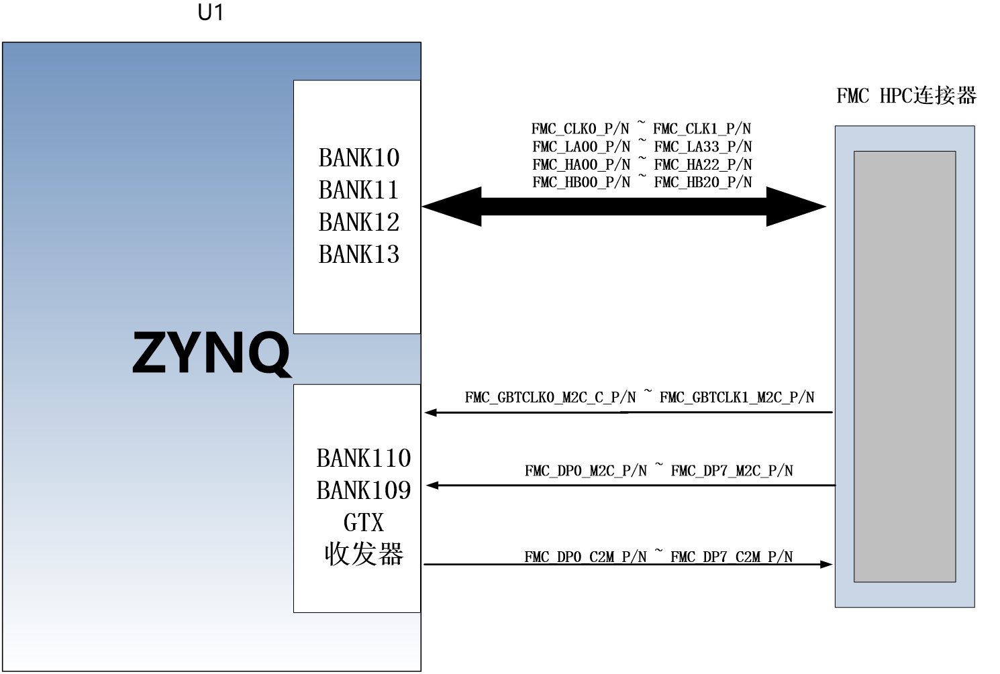图12-1 FMC连接器连接示意图
FMC连接器引脚分配
FMC 引脚号 |
信号名 |
ZY NQ引脚号 |
备注 |
J2 |
FMC_CLK1_C2M_P |
R25 |
FMC第1路输出参考时钟P |
J3 |
FMC_CLK1_C2M_N |
R26 |
FMC第1路输出参考时钟N |
H4 |
FMC_CLK0_M2C_P |
AE13 |
FMC第0路输入参考时钟P |
H5 |
FMC_CLK0_M2C_N |
AF13 |
FMC第0路输入参考时钟N |
G2 |
FMC_CLK0_C2M_P |
AF20 |
FMC第0路输入参考时钟P |
G3 |
FMC_CLK0_C2M_N |
AG20 |
FMC第0路输入参考时钟N |
G6 |
FMC_LA00_CC_P |
AF15 |
FMC LA第0路数据（时钟）P |
G7 |
FMC_LA00_CC_N |
AG15 |
FMC LA第0路数据（时钟）N |
D8 |
FMC_LA01_CC_P |
AG17 |
FMC LA第1路数据（时钟）P |
D9 |
FMC_LA01_CC_N |
AG16 |
FMC LA第1路数据（时钟）N |
H7 |
FMC_LA02_P |
AA15 |
FMC LA第2路数据P |
H8 |
FMC_LA02_N |
AA14 |
FMC LA第2路数据N |
G9 |
FMC_LA03_P |
AC14 |
FMC LA第3路数据P |
G10 |
FMC_LA03_N |
AC13 |
FMC LA第3路数据N |
H10 |
FMC_LA04_P |
AD14 |
FMC LA第4路数据P |
H11 |
FMC_LA04_N |
AD13 |
FMC LA第4路数据N |
D11 |
FMC_LA05_P |
AG12 |
FMC LA第5路数据P |
D12 |
FMC_LA05_N |
AH12 |
FMC LA第5路数据N |
C10 |
FMC_LA06_P |
AD16 |
FMC LA第6路数据P |
C11 |
FMC_LA06_N |
AD15 |
FMC LA第6路数据N |
H13 |
FMC_LA07_P |
AH14 |
FMC LA第7路数据P |
H14 |
FMC_LA07_N |
AH13 |
FMC LA第7路数据N |
G12 |
FMC_LA08_P |
AE12 |
FMC LA第8路数据P |
G13 |
FMC_LA08_N |
AF12 |
FMC LA第8路数据N |
D14 |
FMC_LA09_P |
AJ14 |
FMC LA第9路数据P |
D15 |
FMC_LA09_N |
AJ13 |
FMC LA第9路数据N |
C14 |
FMC_LA10_P |
AJ15 |
FMC LA第10路数据P |
C15 |
FMC_LA10_N |
AK15 |
FMC LA第10路数据N |
H16 |
FMC_LA11_P |
AJ16 |
FMC LA第11路数据P |
H17 |
FMC_LA11_N |
AK16 |
FMC LA第11路数据N |
G15 |
FMC_LA12_P |
AE16 |
FMC LA第12路数据P |
G16 |
FMC_LA12_N |
AE15 |
FMC LA第12路数据N |
D17 |
FMC_LA13_P |
AH17 |
FMC LA第13路数据P |
D18 |
FMC_LA13_N |
AH16 |
FMC LA第13路数据N |
C18 |
FMC_LA14_P |
AF18 |
FMC LA第14路数据P |
C19 |
FMC_LA14_N |
AF17 |
FMC LA第14路数据N |
H19 |
FMC_LA15_P |
AE18 |
FMC LA第15路数据P |
H20 |
FMC_LA15_N |
AE17 |
FMC LA第15路数据N |
G18 |
FMC_LA16_P |
AH18 |
FMC LA第16路数据P |
G19 |
FMC_LA16_N |
AJ18 |
FMC LA第16路数据N |
D20 |
FMC_LA17_CC_P |
AG21 |
FMC LA第17路数据（时钟）P |
D21 |
FMC_LA17_CC_N |
AH21 |
FMC LA第17路数据（时钟）N |
C22 |
FMC_LA18_CC_P |
AD23 |
FMC LA第18路数据（时钟）P |
C23 |
FMC_LA18_CC_N |
AE23 |
FMC LA第18路数据（时钟）N |
H22 |
FMC_LA19_P |
AB21 |
FMC LA第19路数据P |
H23 |
FMC_LA19_N |
AB22 |
FMC LA第19路数据N |
G21 |
FMC_LA20_P |
W21 |
FMC LA第20路数据P |
G22 |
FMC_LA20_N |
Y21 |
FMC LA第20路数据N |
H25 |
FMC_LA21_P |
AK17 |
FMC LA第21路数据P |
H26 |
FMC_LA21_N |
AK18 |
FMC LA第21路数据N |
G24 |
FMC_LA22_P |
AD21 |
FMC LA第22路数据P |
G25 |
FMC_LA22_N |
AE21 |
FMC LA第22路数据N |
D23 |
FMC_LA23_P |
AF19 |
FMC LA第23路数据P |
D24 |
FMC_LA23_N |
AG19 |
FMC LA第23路数据N |
H28 |
FMC_LA24_P |
AG22 |
FMC LA第24路数据P |
H29 |
FMC_LA24_N |
AH22 |
FMC LA第24路数据N |
G27 |
FMC_LA25_P |
AJ21 |
FMC LA第25路数据P |
G28 |
FMC_LA25_N |
AK21 |
FMC LA第25路数据N |
D26 |
FMC_LA26_P |
AH19 |
FMC LA第26路数据P |
D27 |
FMC_LA26_N |
AJ19 |
FMC LA第26路数据N |
C26 |
FMC_LA27_P |
AJ20 |
FMC LA第27路数据P |
C27 |
FMC_LA27_N |
AK20 |
FMC LA第27路数据N |
H31 |
FMC_LA28_P |
AJ23 |
FMC LA第28路数据P |
H32 |
FMC_LA28_N |
AJ24 |
FMC LA第28路数据N |
G30 |
FMC_LA29_P |
AK22 |
FMC LA第29路数据P |
G31 |
FMC_LA29_N |
AK23 |
FMC LA第29路数据N |
H34 |
FMC_LA30_P |
AG24 |
FMC LA第30路数据P |
H35 |
FMC_LA30_N |
AG25 |
FMC LA第30路数据N |
G33 |
FMC_LA31_P |
AH23 |
FMC LA第31路数据P |
G34 |
FMC_LA31_N |
AH24 |
FMC LA第31路数据N |
H37 |
FMC_LA32_P |
AC24 |
FMC LA第32路数据P |
H38 |
FMC_LA32_N |
AD24 |
FMC LA第32路数据N |
G36 |
FMC_LA33_P |
AF23 |
FMC LA第33路数据P |
G37 |
FMC_LA33_N |
AF24 |
FMC LA第33路数据N |
F4 |
FMC_HA00_CC_P |
AC28 |
FMC HA第0路数据（时钟）P |
F5 |
FMC_HA00_CC_N |
AD28 |
FMC HA第0路数据（时钟）N |
E2 |
FMC_HA01_CC_P |
AB27 |
FMC HA第1路数据（时钟）P |
E3 |
FMC_HA01_CC_N |
AC27 |
FMC HA第1路数据（时钟）N |
K7 |
FMC_HA02_P |
AJ26 |
FMC HA第2路数据P |
K8 |
FMC_HA02_N |
AK26 |
FMC HA第2路数据N |
J6 |
FMC_HA03_P |
AE25 |
FMC HA第3路数据P |
J7 |
FMC_HA03_N |
AF25 |
FMC HA第3路数据N |
F7 |
FMC_HA04_P |
AB25 |
FMC HA第4路数据P |
F8 |
FMC_HA04_N |
AB26 |
FMC HA第4路数据N |
E6 |
FMC_HA05_P |
Y26 |
FMC HA第5路数据P |
E7 |
FMC_HA05_N |
Y27 |
FMC HA第5路数据N |
K10 |
FMC_HA06_P |
Y28 |
FMC HA第6路数据P |
K11 |
FMC_HA06_N |
AA29 |
FMC HA第6路数据N |
J9 |
FMC_HA07_P |
AJ28 |
FMC HA第7路数据P |
J10 |
FMC_HA07_N |
AJ29 |
FMC HA第7路数据N |
F10 |
FMC_HA08_P |
AD25 |
FMC HA第8路数据P |
F11 |
FMC_HA08_N |
AE26 |
FMC HA第8路数据N |
E9 |
FMC_HA09_P |
AC26 |
FMC HA第9路数据P |
E10 |
FMC_HA09_N |
AD26 |
FMC HA第9路数据N |
K13 |
FMC_HA10_P |
AA27 |
FMC HA第10路数据P |
K14 |
FMC_HA10_N |
AA28 |
FMC HA第10路数据N |
J12 |
FMC_HA11_P |
Y30 |
FMC HA第11路数据P |
J13 |
FMC_HA11_N |
AA30 |
FMC HA第11路数据N |
F13 |
FMC_HA12_P |
AG26 |
FMC HA第12路数据P |
F14 |
FMC_HA12_N |
AG27 |
FMC HA第12路数据N |
E12 |
FMC_HA13_P |
AE27 |
FMC HA第13路数据P |
E13 |
FMC_HA13_N |
AF27 |
FMC HA第13路数据N |
J15 |
FMC_HA14_P |
AF29 |
FMC HA第14路数据P |
J16 |
FMC_HA14_N |
AG29 |
FMC HA第14路数据N |
F16 |
FMC_HA15_P |
AK27 |
FMC HA第15路数据P |
F17 |
FMC_HA15_N |
AK28 |
FMC HA第15路数据N |
E15 |
FMC_HA16_P |
AH26 |
FMC HA第16路数据P |
E16 |
FMC_HA16_N |
AH27 |
FMC HA第16路数据N |
K16 |
FMC_HA17_CC_P |
AE28 |
FMC HA第17路数据（时钟）P |
K17 |
FMC_HA17_CC_N |
AF28 |
FMC HA第17路数据（时钟）N |
J18 |
FMC_HA18_P |
AF30 |
FMC HA第18路数据P |
J19 |
FMC_HA18_N |
AG30 |
FMC HA第18路数据N |
F19 |
FMC_HA19_P |
AJ30 |
FMC HA第19路数据P |
F20 |
FMC_HA19_N |
AK30 |
FMC HA第19路数据N |
E18 |
FMC_HA20_P |
AH28 |
FMC HA第20路数据P |
E19 |
FMC_HA20_N |
AH29 |
FMC HA第20路数据N |
K19 |
FMC_HA21_P |
AB29 |
FMC HA第21路数据P |
K20 |
FMC_HA21_N |
AB30 |
FMC HA第21路数据N |
J21 |
FMC_HA22_P |
AD30 |
FMC HA第22路数据P |
J22 |
FMC_HA22_N |
AE30 |
FMC HA第22路数据N |
K22 |
FMC_HA23_P |
AC29 |
FMC HA第23路数据P |
K23 |
FMC_HA23_N |
AD29 |
FMC HA第23路数据N |
K25 |
FMC_HB00_CC_P |
U25 |
FMC HB第0路数据（时钟）P |
K26 |
FMC_HB00_CC_N |
V26 |
FMC HB第0路数据（时钟）N |
J24 |
FMC_HB01_P |
P21 |
FMC HB第1路数据P |
J25 |
FMC_HB01_N |
R21 |
FMC HB第1路数据N |
F22 |
FMC_HB02_P |
U22 |
FMC HB第2路数据P |
F23 |
FMC_HB02_N |
V22 |
FMC HB第2路数据N |
E21 |
FMC_HB03_P |
R22 |
FMC HB第3路数据P |
E22 |
FMC_HB03_N |
R23 |
FMC HB第3路数据N |
F25 |
FMC_HB04_P |
W25 |
FMC HB第4路数据P |
F26 |
FMC_HB04_N |
W26 |
FMC HB第4路数据N |
E24 |
FMC_HB05_P |
U24 |
FMC HB第5路数据P |
E25 |
FMC_HB05_N |
V24 |
FMC HB第5路数据N |
K28 |
FMC_HB06_CC_P |
U26 |
FMC HB第6路数据P |
K29 |
FMC_HB06_CC_N |
U27 |
FMC HB第6路数据N |
J27 |
FMC_HB07_P |
T22 |
FMC HB第7路数据P |
J28 |
FMC_HB07_N |
T23 |
FMC HB第7路数据N |
F28 |
FMC_HB08_P |
V28 |
FMC HB第8路数据P |
F29 |
FMC_HB08_N |
V29 |
FMC HB第8路数据N |
E27 |
FMC_HB09_P |
V27 |
FMC HB第9路数据P |
E28 |
FMC_HB09_N |
W28 |
FMC HB第9路数据N |
K31 |
FMC_HB10_P |
W29 |
FMC HB第10路数据P |
K32 |
FMC_HB10_N |
W30 |
FMC HB第10路数据N |
J30 |
FMC_HB11_P |
T24 |
FMC HB第11路数据P |
J31 |
FMC_HB11_N |
T25 |
FMC HB第11路数据N |
F31 |
FMC_HB12_P |
T30 |
FMC HB第12路数据P |
F32 |
FMC_HB12_N |
U30 |
FMC HB第12路数据N |
E30 |
FMC_HB13_P |
T29 |
FMC HB第13路数据P |
E31 |
FMC_HB13_N |
U29 |
FMC HB第13路数据N |
K34 |
FMC_HB14_P |
N29 |
FMC HB第14路数据P |
K35 |
FMC_HB14_N |
P29 |
FMC HB第14路数据N |
J33 |
FMC_HB15_P |
R28 |
FMC HB第15路数据P |
J34 |
FMC_HB15_N |
T28 |
FMC HB第15路数据N |
F34 |
FMC_HB16_P |
P30 |
FMC HB第16路数据P |
F35 |
FMC_HB16_N |
R30 |
FMC HB第16路数据N |
K37 |
FMC_HB17_CC_P |
R27 |
FMC HB第17路数据（时钟）P |
K38 |
FMC_HB17_CC_N |
T27 |
FMC HB第17路数据（时钟）N |
J36 |
FMC_HB18_P |
P23 |
FMC HB第18路数据P |
J37 |
FMC_HB18_N |
P24 |
FMC HB第18路数据N |
E33 |
FMC_HB19_P |
P25 |
FMC HB第19路数据P |
E34 |
FMC_HB19_N |
P26 |
FMC HB第19路数据N |
F37 |
FMC_HB20_P |
N26 |
FMC HB第20路数据P |
F38 |
FMC_HB20_N |
N27 |
FMC HB第20路数据N |
E36 |
FMC_HB21_P |
N28 |
FMC HB第21路数据P |
E37 |
FMC_HB21_N |
P28 |
FMC HB第21路数据N |
D4 |
FMC_GBTCLK0_M2C_P |
AD10 |
收发器参考时钟0输入P |
D5 |
FMC_GBTCLK0_M2C_N |
AD9 |
收发器参考时钟0输入N |
B20 |
FMC_GBTCLK1_M2C_P |
AA8 |
收发器参考时钟1输入P |
B21 |
FMC_GBTCLK1_M2C_N |
AA7 |
收发器参考时钟1输入N |
C6 |
FMC_DP0_M2C_P |
AH10 |
收发器数据0输入P |
C7 |
FMC_DP0_M2C_N |
AH9 |
收发器数据0输入N |
A2 |
FMC_DP1_M2C_P |
AJ8 |
收发器数据1输入P |
A3 |
FMC_DP1_M2C_N |
AJ7 |
收发器数据1输入N |
A6 |
FMC_DP2_M2C_P |
AG8 |
收发器数据2输入P |
A7 |
FMC_DP2_M2C_N |
AG7 |
收发器数据2输入N |
A10 |
FMC_DP3_M2C_P |
AE8 |
收发器数据3输入P |
A11 |
FMC_DP3_M2C_N |
AE7 |
收发器数据3输入N |
A14 |
FMC_DP4_M2C_P |
AH6 |
收发器数据4输入P |
A15 |
FMC_DP4_M2C_N |
AH5 |
收发器数据4输入N |
A18 |
FMC_DP5_M2C_P |
AG4 |
收发器数据5输入P |
A19 |
FMC_DP5_M2C_N |
AG3 |
收发器数据5输入N |
B16 |
FMC_DP6_M2C_P |
AF6 |
收发器数据6输入P |
B17 |
FMC_DP6_M2C_N |
AF5 |
收发器数据6输入N |
B12 |
FMC_DP7_M2C_P |
AD6 |
收发器数据7输入P |
B13 |
FMC_DP7_M2C_N |
AD5 |
收发器数据7输入N |
C2 |
FMC_DP0_C2M_P |
AK10 |
收发器数据0输出P |
C3 |
FMC_DP0_C2M_N |
AK9 |
收发器数据0输出N |
A22 |
FMC_DP1_C2M_P |
AK6 |
收发器数据1输出P |
A23 |
FMC_DP1_C2M_N |
AK5 |
收发器数据1输出N |
A26 |
FMC_DP2_C2M_P |
AJ4 |
收发器数据2输出P |
A27 |
FMC_DP2_C2M_N |
AJ3 |
收发器数据2输出N |
A30 |
FMC_DP3_C2M_P |
AK2 |
收发器数据3输出P |
A31 |
FMC_DP3_C2M_N |
AK1 |
收发器数据3输出N |
A34 |
FMC_DP4_C2M_P |
AH2 |
收发器数据4输出P |
A35 |
FMC_DP4_C2M_N |
AH1 |
收发器数据4输出N |
A38 |
FMC_DP5_C2M_P |
AF2 |
收发器数据5输出P |
A39 |
FMC_DP5_C2M_N |
AF1 |
收发器数据5输出N |
B36 |
FMC_DP6_C2M_P |
AE4 |
收发器数据6输出P |
B37 |
FMC_DP6_C2M_N |
AE3 |
收发器数据6输出N |
B32 |
FMC_DP7_C2M_P |
AD2 |
收发器数据7输出P |
B33 |
FMC_DP7_C2M_N |
AD1 |
收发器数据7输出N |
LED灯#
AX7450B开发板上有9个单色LED灯和1个双色LED灯。单色LED灯包含1个电源指示灯；1个DONE配置指示灯；2个串口通信指示灯，4个PL控制指示灯。双色LED灯装配在板边，通过PL的IO控制。4个单色LED灯连接到BANK10的IO上，双色LED灯连接到BANK9的IO上。用户LED灯硬件连接的示意图如图13-1所示：
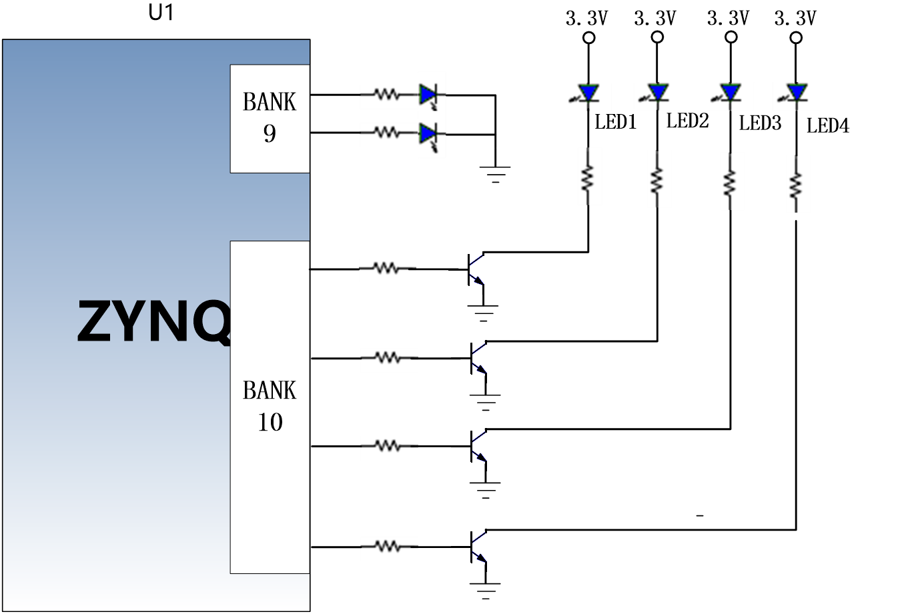图13-1用户LED灯硬件连接示意图
用户LED灯的引脚分配
信号名称 |
ZYNQ引脚名 |
ZY NQ管脚号 |
备注 |
PL_LED1 |
IO_L23P_T3_10 |
AC16 |
用户单色PL LED1灯 |
PL_LED2 |
IO_L23N_T3_10 |
AB17 |
用户单色PL LED2灯 |
PL_LED3 |
IO_L24P_T3_10 |
AB16 |
用户单色PL LED3灯 |
PL_LED4 |
IO_L24N_T3_10 |
AA17 |
用户单色PL LED4灯 |
TEST_LED1 |
I O_L11N_T1_SRCC_9 |
AC19 |
用户双色PL LED1灯 |
TEST_LED2 |
I O_L12P_T1_MRCC_9 |
AD18 |
用户双色PL LED2灯 |
复位按键和用户按键#
AX7450B开发板上有1个复位按键RESET和1个用户按键。复位信号连接到ZYNQ芯片PS复位管脚上，用户可以使用这个复位按键来复位ZYNQ系统，1个用户按键是连接到PL的IO上。复位按键和用户按键都是低电平有效，复位按键和用户按键的连接示意图如图14-1所示：
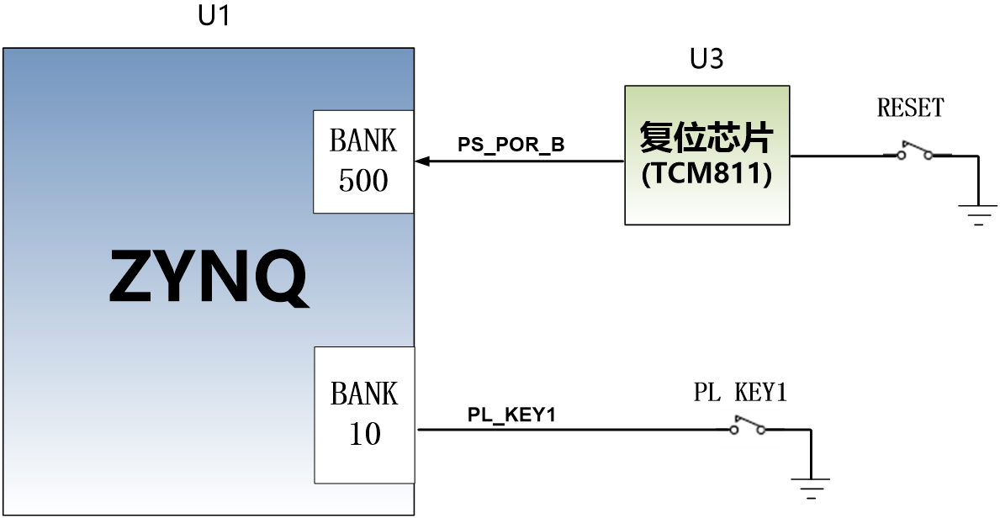图14-1 复位按键连接示意图
按键的ZYNQ管脚分配
信号名称 |
ZYNQ引脚名 |
ZY NQ引脚号 |
备注 |
PS_POR_B |
PS_POR_B_500 |
D21 |
ZYNQ系统复位信号 |
PL_KEY1 |
I O_L21N_T3_DQS_10 |
AC12 |
PL按键1输入 |
SMA接口#
AX7450B开发板上有2个SMA接口，便于用户通过SMA线输入或者输出差分时钟信号或者单独时钟信号，SMA接口的信号连接到BANK9的IO上，默认标准电平为3.3V。SMA连接示意图如图15-1所示：
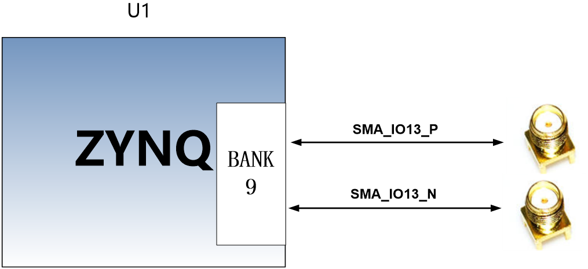图15-1 SMA连接示意图
SMA接口的ZYNQ管脚分配
信号名称 |
ZYNQ引脚名 |
ZY NQ引脚号 |
备注 |
SMA_IO13_P |
I O_L13P_T2_MRCC_9 |
AA18 |
SMA接口输入1 |
SMA_IO13_N |
I O_L13N_T2_MRCC_9 |
AA19 |
SMA接口输入2 |
JTAG调试口#
在AX7450B板上预留了一个JTAG接口，用于下载ZYNQ程序或者固化程序到FLASH。为了带电插拔造成对ZYNQ芯片的损坏，我们在JTAG信号上添加了保护二极管来保证信号的电压在FPGA接受的范围，避免ZYNQ芯片的损坏。
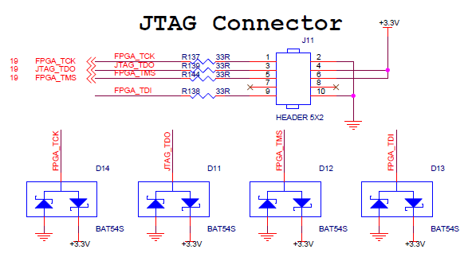图16-1 原理图中JTAG接口部分
下图为扩展板上JTAG接口实物图，用户可以通过我们提供的USB下载器连接PC和JTAG接口进行ZYNQ的系统调试 JTAG线插拔的时候注意不要热插拔。
拨码开关配置#
开发板上有一个2位的拨码开关SW1用来配置ZYNQ系统的启动模式。AX7450B系统开发平台支持三种启动模式。这三种启动模式分别是JTAG调试模式, QSPI FLASH和SD卡启动模式。XC7Z100芯片上电后会检测响应MIO口（MIO5和MIO4）的电平来决定那种启动模式。用户可以通过核心板上的拨码开关SW1来选择不同的启动模式。SW1启动模式配置如下表17-1所示。
SW1 |
拨码 位置（1，2） |
M IO5,MIO4电平 |
启动模式 |
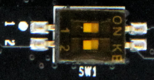 |
ON、ON |
0、0 |
JTAG |
OFF、OFF |
1、1 |
SD卡 |
|
OFF、ON |
1、0 |
QSPI FLASH |
表17-1 SW1启动模式配置
电源#
开发板的电源输入电压为DC12V，外接+12V电源或者通过PCIE给板子供电。外接电源供电时请使用开发板自带的电源,不要用其他规格的电源，以免损坏开发板。+12V输入电源通过DCDC电源芯片MYMGK1R820ERSR产生+1.0V的ZYNQ核心电源。另外+12V通过DC/DC电源芯片ETA1471FT2G产生+5V, +3.3V，+1.8V, MGTAVTT，VADJ和VIO_B六路电源。通过电源芯片ETA8156FT2G产生+1.5V和MGTAVCC两路电源。
板上的电源设计示意图如下图18-1所示:
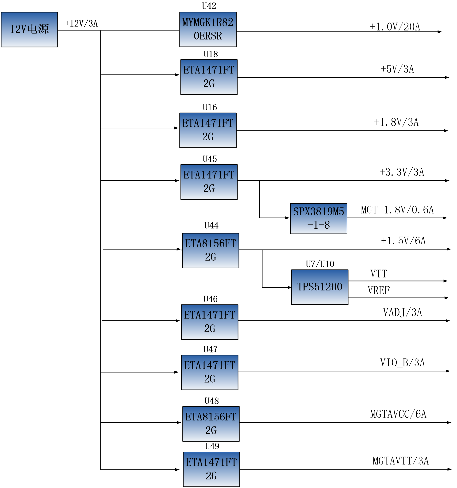图18-1原理图中电源接口部分
各个电源分配的功能如下表所示：
电源 |
功能 |
+1.0V |
ZYNQ PS和PL部分的内核电压 |
+1.8V |
ZYNQ PS和PL部分辅助电压，BANK501 IO电压，eMMC，HDMI |
+3.3V |
ZYNQ Bank0,Bank500，QSIP FLASH, Clock晶振, SD卡，SFP光模块 |
+1.5V |
DDR3, ZYNQ Bank501, Bank33,Bank34，Bank35 |
VADJ |
ZYNQ Bank10, Bank11, Bank12, FMC |
VIO_B |
ZYNQ Bank13, FMC |
VREF, VTT（+0.75V） |
PS DDR3，PL DDR3 |
MGTAVCC(+1.0V) |
ZYNQ Bank109,110，111, Bank112 |
MGTAVTT(+1.2V) |
ZYNQ Bank109,110，111, Bank112 |
因为ZYNQ FPGA的电源有上电顺序的要求，在电路设计中，我们已经按照 芯片的电源要求设计，上电依次为+1.0V->+1.8V->（+1.5 V、+3.3V、VCCIO）的电路设计，保证芯片的正常工作。
风扇#
因为ZYNQ7100正常工作时会产生大量的热量，我们在板上为芯片增加了一个散热片和风扇，防止芯片过热。风扇的控制由ZYNQ芯片来控制，控制管脚连接到BANK11的IO上，如果IO电平输出为高，MOSFET管导通，风扇工作，如果IO电平输出为低，风扇停止。板上的风扇设计图如下图19-1所示:
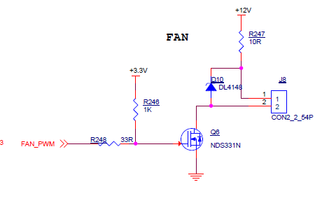图19-1 开发板原理图中风扇设计
风扇出厂前已经用螺丝固定在开发板上，风扇的电源连接到了J8的插座上，红色的为正极，黑色的为负极。
结构尺寸图#
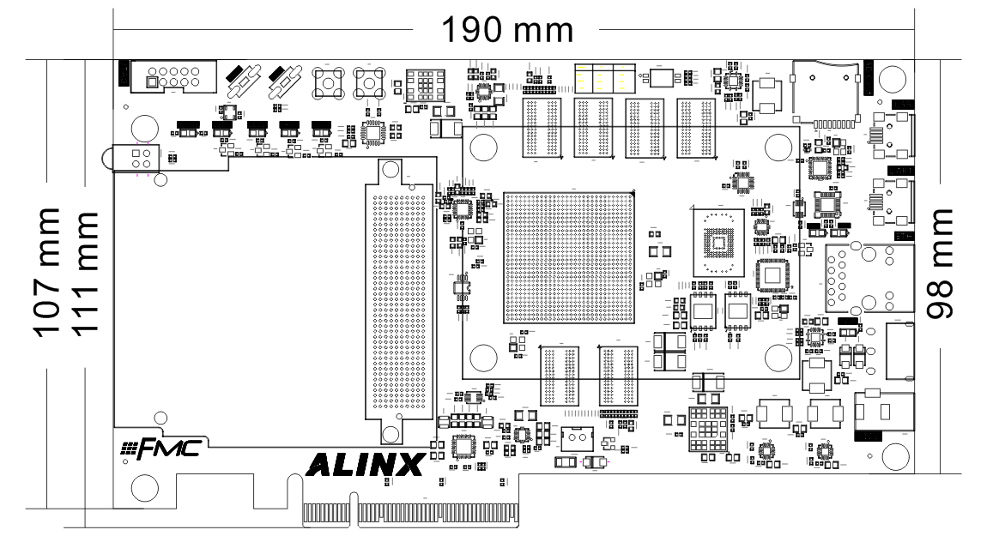正面图（Top View）